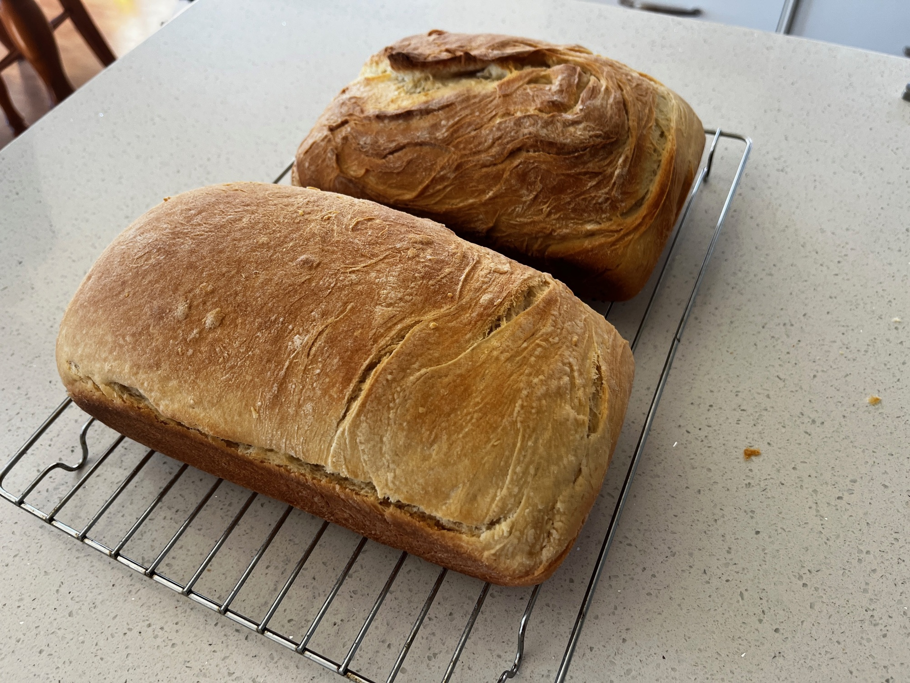

Bread
 2 loaves
2 loaves Source
Source Vegan
Vegan

Preheat oven to 90 degrees.
1 7g packetyeast2 cupwarm water
In a bowl add yeast, a pinch of sugar, and warm water.
Allow to rest for 5 minutes until bubbly to “proof” the yeast.
2 tspsalt1/4 cupsugar2 tbspolive oil
Add salt, sugar (or swap out some sugar for honey), and olive oil.
4 cupsplain flour
Mix 3 cups of plain flour into the bowl. Add another 1 cup of flour and then keep adding slowly until dough conistency is right.
Turn the oven off (you want it warm to rise the dough in later)
Knead the dough for 5 minutes.
Spray two bread pans with with oil all over.
Roll the dough into two long logs.
Add to the bread pans and then leave to rise in oven, spraying the top with oil and putting tea towel back on top. Let rise for about 45 mins until at the top of the pan.
Bake bread for about 30 minutes at 180 degrees.